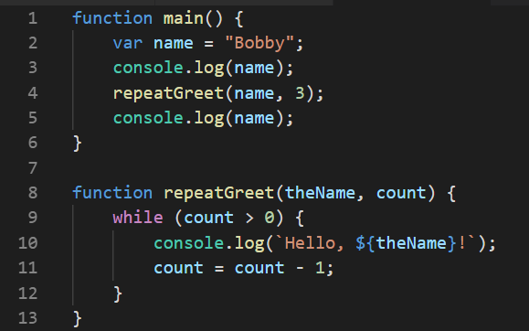

Read Chapter 7 in Code Complete.
As I mentioned earlier, many students reach a stage where they try to write one long routine to solve programming problems that are too big for that approach.
I get the feeling that sometimes students think a program is more complicated when broken into pieces through routines. Perhaps there is some truth to that when you are first learning. After some practice, however, it makes things easier. If you want to be a great (or even good) programmer, you have to overcome the tight limits on human short term memory and attention span. Routines are one of the most powerful tools for doing this.
Hopefully McConnell has convinced you with his list of why routines are a good idea. Just to be sure that you really understand how a routine call works, let’s look at a GML example. Here are two routines (GML scripts).

Assume that routine_one begins executing (we won’t worry about how we got to it). Here is a trace of the execution. The first column tells you which routine you are in, and the second column shows you the current line number. As you move down each row, you are moving to the next statement to be executed. The next three columns show you the value (if any) of the three variables after the indicated statement completes. The final column describes what happens.
| Routine | Line | name |
the_name |
count |
What happens |
|---|---|---|---|---|---|
routine_one |
5 | "Bobby" |
(out of scope) | (out of scope) | literal value is assigned to local variable |
routine_one |
7 | "Bobby" |
(out of scope) | (out of scope) | displays "Bobby" |
routine_one |
9 | "Bobby" |
(out of scope) | (out of scope) | pushes local variables and current line number onto call stack, jumps to beginning of routine_two, binds actual parameters to formal parameters |
routine_two |
4 | (out of scope) | "Bobby" |
(undefined) | formal parameter value is assigned to local variable |
routine_two |
5 | (out of scope) | "Bobby" |
3 | formal parameter value is assigned to local variable |
routine_two |
9 | (out of scope) | "Bobby" |
3 | displays "Hello Bobby" |
routine_two |
10 | (out of scope) | "Bobby" |
2 | local variable is decremented |
routine_two |
9 | (out of scope) | "Bobby" |
2 | displays "Hello Bobby" |
routine_two |
10 | (out of scope) | "Bobby" |
1 | local variable is decremented |
routine_two |
9 | (out of scope) | "Bobby" |
1 | displays "Hello Bobby" |
routine_two |
10 | (out of scope) | "Bobby" |
0 | local variable is decremented |
routine_two |
12 | (out of scope) | "Bobby" |
0 | pops call stack to get line number that call it, then jumps there |
routine_one |
9 | "Bobby" |
(out of scope) | (out of scope) | pops call stack to restore values of local variables |
routine_one |
11 | "Bobby" |
(out of scope) | (out of scope) | displays "Bobby" |
routine_one |
12 | "Bobby" |
(out of scope) | (out of scope) | pops call stack to get line number that call it, then jumps there |
To summarize, a statement that calls a routine causes execution to jump to the beginning of that routine. There may be some arguments passed. After the called routine completes, execution jumps back to the instruction that called it. Study the trace to make sure that you follow the details about how the call stack is used, and how local variables go in and out of scope.
As for argument passing, we will have much more to say about that later. There are several different ways that PLs typically do this, and GML is somewhat unusual here. For now, we simply need to try to clarify some terminology. Unfortunately, different authors use these somewhat differently.
For this class, the words argument and parameter, when used alone, mean the same thing: a loose term for the data passed when a routine is called. However, sometimes there is a need to make a distinction that shows up in the trace: in the routine call, the local variable value “Bobby” and the literal value 3 are the actual parameters: the data values that are actually passed in that particular call. In the called routine, the built-in GML names argument0 and argument1 are the formal parameters: the symbolic identifiers used to refer to whatever values were passed into a call. We say that the actual parameters are bound to the formal parameters. The term binding refers to connecting an identifier (name) with the data that it names; this might be done by assignment, parameter passing, and in other ways.
As an FYI only, some authors use “argument” to mean “actual parameter” as defined above, and “parameter” to mean “formal parameter” as defined above.
These sections are full of good guidance that you should practice as far as prudent.
You should definitely understand the idea behind good and bad forms of cohesion.
Now it’s time to look more deeply into the details of parameter passing. This information is needed as background for some of McConnell’s guidance in this section.
Different PLs implement parameter passing differently. This can lead to different behavior, so it is very important to know what parameter passing mode(s) your PL uses.
Since the C language implements both of the dominant parameter passing modes, we will use it for illustration. The code discussed below is available in passmode.c.
Remember, the actual parameter is the value that is actually passed in a specific call to a routine. In the examples below, actual parameters are the values of the identifiers a1 and a2. A formal parameter is the name used within the routine to refer to the data passed to it.
In GML, formal parameters are named argument0, argument1, … argumentN. In most PLs, however, the header or definition of a routine allows the programmer to choose the formal parameter identifiers. In the C examples below, formal parameters are named f1 and f2. I have taught you to simulate this in GML by starting each script with the creation of local variables that use descriptive identifiers for the passed data.
When a call to a routine is made, the actual parameters listed in the calling statement are bound to the formal parameter names listed in the routine’s definition. Most PLs do this by position: the first actual parameter is bound to the first formal parameter, second actual bound to second formal, and so on.
The other details of the binding vary with different parameter passing modes.
When parameters are passed by value, a copy of the actual parameter’s value is made, and this copied value is bound to the formal parameter name. This is the parameter passing mode implemented in GML. Consider the following C program with a pass-by-value routine named pbv. C programs always have a routine named main, which is where program execution begins.
void pbv(int f1, int f2)
{
f1 = f1 + 1;
f2 = f2 + 1;
printf("\nIn pbv, f1 = %d, f2 = %d.\n", f1, f2);
}
void main()
{
int a1 = 1;
int a2 = 2;
pbv(a1, a2);
printf("After pbv, a1 = %d, a2 = %d.\n", a1, a2)
}The main routine creates some variables with values, calls the pbv routine, and finally prints the values of its variables.
The output from this code is:
In pbv, f1 = 2, f2 = 3.
After pbv, a1 = 1, a2 = 2.In the pbv routine, the copied values are modified. The copies are destroyed when the routine returns to main, leaving the original data values unchanged in a1 and a2.
Pass by value provides a sort of security, if it matches the desired behavior. However, it can be expensive (in terms of memory) to make copies of large amounts of data, as when passing an array.
In contrast, the following C program uses pass by reference for a routine named pbr. When C parameters are passed by reference, the memory address of the actual parameter is bound to the formal parameter name. (C’s ampersand operator that appears in the routine call gives the address of what follows it. The asterisks in the routine’s formal parameter list indicate that it is expecting int pointers: memory addresses where an integer value is stored.)
void pbr(int *f1, int *f2)
{
*f1 = *f1 + 1;
*f2 = *f2 + 1;
printf("\nIn pbr, f1 = %d, f2 = %d.\n", *f1, *f2);
}
void main()
{
int a1 = 1;
int a2 = 2;
pbr(&a1, &a2);
printf("After pbr, a1 = %d, a2 = %d.\n", a1, a2);
}The output from this code is:
In pbr, f1 = 2, f2 = 3.
After pbr, a1 = 2, a2 = 3.The formal parameters are not copies of data values; they are aliases for the actual parameter. When the routine changes the values, those changes survive the return to main.
Pass by reference provides power and flexibility, if that is the desired behavior. It is also sometimes used for reasons of efficiency, in order to avoid creating copies of data.
Pass by value and pass by reference are not the only parameter passing modes.
A few modes are historical relics, largely abandoned in the evolution of PLs.
Python uses the term “pass by assignment”. In Python, variables are not aliases for memory addresses or for values stored at a particular address. Instead, a variable is an alias for the value itself (for an object, Pythonists would say). So, binding associates a variable with an object, within a certain scope. Although this is an entirely different way of thinking about variables and implementing parameter passing, the resulting behavior is relatively familiar.
If the parameter passed to a Python routine names a non-constant (“mutable”) object, the behavior will resemble the pass by reference example above. The name is bound to the same object in both scopes: the calling code and the routine. So, changes made to the parameter within the routine will be seen after the call completes.
However, if the parameter passed to a Python routine names a constant (“immutable”) value, the behavior will resemble the pass by value example above. This is because the assignment in the Python routine creates a different binding for the name, with the scope limited to the routine itself. This is not making a copy of the data as in pass by value, but the result is much the same: changes made using the separate binding inside the routine will not affect the binding in the calling scope.
McConnell categorizes parameters as input-only, input-and-output, and output-only. Input-only parameters are values passed to a routine for it to “read only”; the routine is not expected to make changes that will persist after the call completes. Input-and-output parameters are for the routine to read and write to, making changes that will persist after the call completes. The final category is “write only”: the parameter is passed solely for the purpose of the routine making changes that will persist after the call.
This entire distinction is irrelevant for PLs that are pass-by-value only. Passing by value makes it impossible for the routine to write to the parameter in a way that persists after the call. However, McConnell’s suggestions here are sound, if they apply to your PL.
All the other parameter guidance is good. Use it in your programming as far as is prudent.
The topics are most relevant to C and C++. Tool sets for these languages include a preliminary step before compilation, performed by a tool called the “preprocessor”. The preprocessor handles “directives” that start with #. See preproc.c for some examples. The MAX macro is a dangerous use of the preprocessor. The simplest, safest rule is simply this: macros are fine for constant values, but for expressions involving variables or operations, beware. Avoid such macros if possible. If you must use them, do your homework to be sure that you understand the risks and that your code is safe.